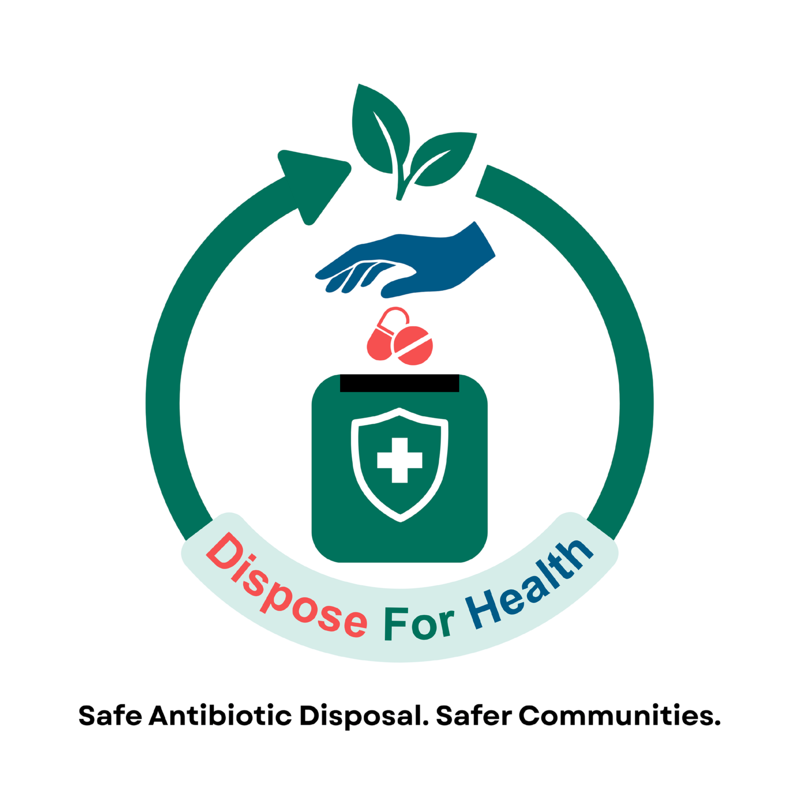
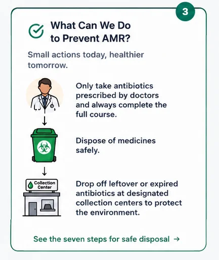
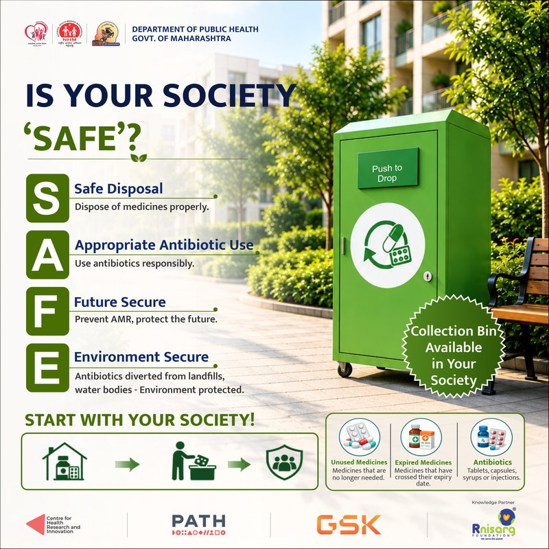
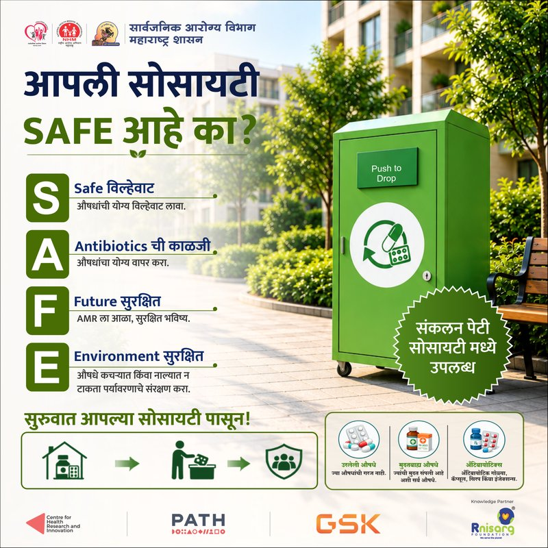
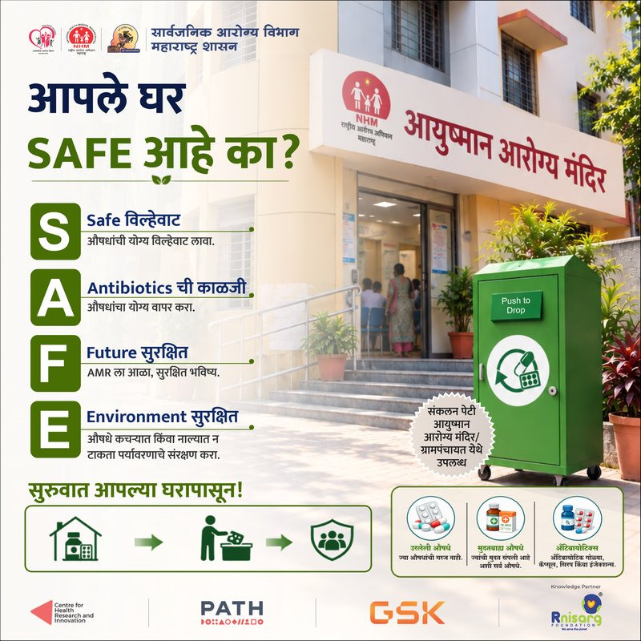

National Consultative Meeting
Key stakeholders deliberated on systemic issues and policy challenges around safe antibiotic disposal and suggested potential solutions. Report published.

Not just a hashtag — a personal commitment to ensure rational use and safe disposal of antibiotics to protect the environment and save our future generations from Antimicrobial Resistance. Take the pledge today to be the change.
Your promise is made.

What is AMR? Antimicrobial Resistance occurs when medicines no longer kill germs, making common infections harder to treat and more dangerous. A germ meets an antibiotic, the germ evolves to resist it, and the medicine is rendered ineffective.

Why is AMR dangerous? It makes infections harder to treat and can lead to severe consequences: longer recovery times, an increased risk of death, higher treatment costs, economic burden on families and society, and a threat to future generations.

What can we do to prevent AMR? Small actions today, healthier tomorrow. Take antibiotics only when prescribed by a doctor and always complete the full course. Dispose of medicines safely. Drop leftover or expired antibiotics at a designated collection centre to protect the environment. See the seven steps for safe disposal.
Seven steps that take a leftover tablet from your shelf to safe destruction — and keep antibiotics working for everyone.

Explore official public health posters, guidelines, and broadcast spots created in collaboration with MH Public Health, NHM, CHRI, PATH, and GSK.





Playable campaign video featuring the official public health awareness Dindi Song promoting safe medicine collection box drop-offs.
Test your know-how on antibiotics & safe disposal — and find out your awareness level across 8 quick questions!
Great job!
Interactive chronological timeline documenting key consultative meetings, research studies, state stewardship workshops, and innovation challenges across Maharashtra.
Key stakeholders deliberated on systemic issues and policy challenges around safe antibiotic disposal and suggested potential solutions. Report published.


Households, pharmacists, and care-providers surveyed to map the systemic gaps and behavioural determinants of safe disposal.

High-level state consultation bringing together healthcare leaders, DHS Maharashtra officials, and public health partners to establish actionable policy frameworks. The National Consultative Report was formally presented and disseminated to key health stakeholders.


KAP findings disseminated; health-system actors across the state sensitised on AMS practices and engaged for next steps.


Open call for digital & social innovations amplified through partner networks. Multidisciplinary jury panel completed evaluations, selecting 2 digital solutions and 1 social innovation for state implementation.


A district-level workshop brought together medical officers, municipal officials, and pharmacy association representatives to strengthen awareness on safe antibiotic disposal and AMR prevention. Following the workshop, dedicated antibiotic disposal bins were installed at strategic locations across Pune Municipal Corporation (PMC) to enable safe collection and disposal of unused and expired antibiotics.


Official A3 Awareness Poster. Click the button below to download the high-resolution image.